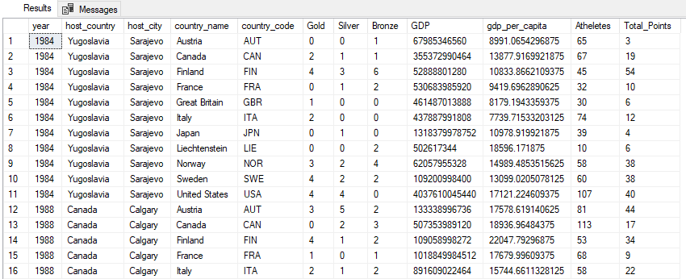
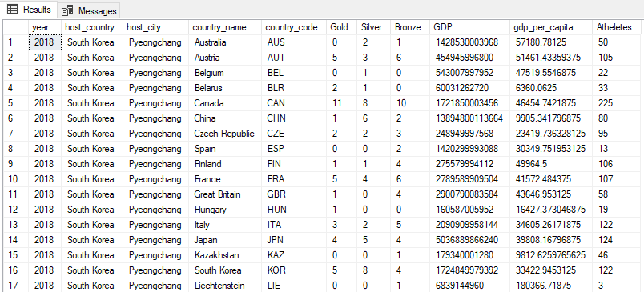
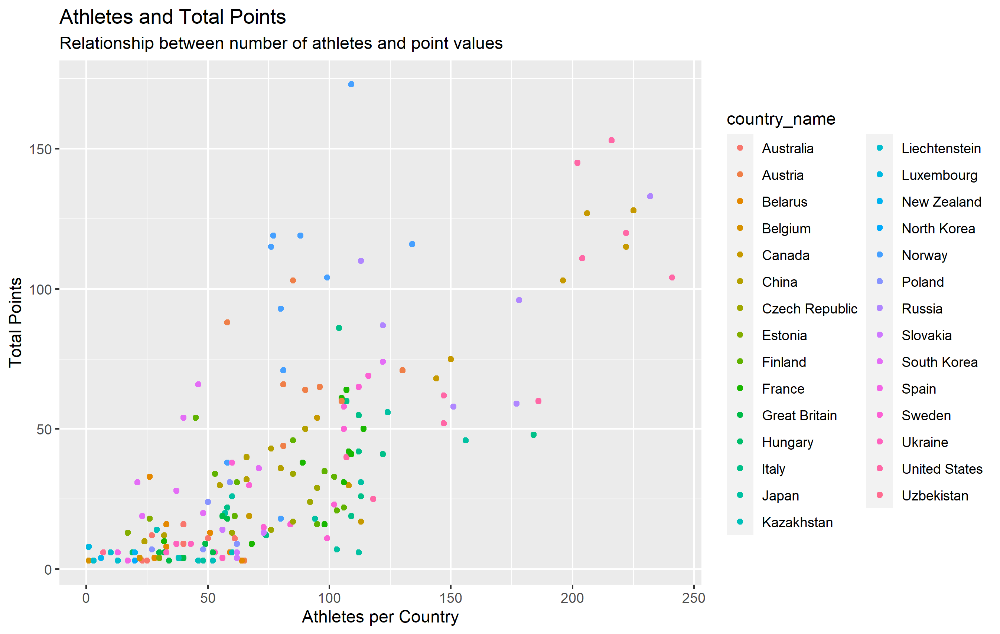

Predictive Model
Winter Olympic Draft Utilizing Excel, SQl, R, and Tableau
Introduction
Our family runs an Olympic Draft - similar to fantasy football or baseball - for each Olympic cycle. The purpose of this case study is to identify trends in medal count / point value to create a predictive analysis of which teams should be selected in which order.
Assumptions
- Point Value - Each medal is worth the following:
Gold - 6 points
Silver - 4 points
Bronze - 3 points - For analysis reviewing the last 10 Olympic cycles.
- Winter Olympics only.
- All GDP numbers are in USD
My initial hypothesis is that larger GDP per capita and size of contingency are correlated with better points values for the Olympic draft.
All Data pulled from the following Datasets:
Winter Olympics Medal Count - Kaggle Dataset
Worldwide GDP History - World Bank
Data Exploration
GDP data was a wide format when downloaded from the World Bank. Opened file in Excel, removed irrelevant years, and saved as .csv.
Pre-Processing in RStudio
In RStudio utilized the following code to convert wide data to long:
install.packages("tidyverse")
library(tidyverse)
library(tidyr)
Converting to long data from wide
long <- newgdpdata %>%
gather(year, value, -c("Country Name","Country Code"))
Completed these same steps for GDP per capita.
Primary Key Creation Using SQL
Differing types of data between these two databases and there is not a good primary key to utilize. Used CONCAT to create a new key column in both combining the year and country code to create a unique identifier that matches between the datasets.
CONCAT(year,countrycode) AS "Primary" FROM medalcount
Saved as new table "medalswprimary"
Primary Key Creation Using Excel
Utilized Excel to concatenate the primary key for GDP and GDP per capita utilizing:
=CONCAT()
Saved as new csv files. Uploaded all to SSMS.
Contingent Size
Next need to add contingent size. No existing database had this information. Pulled data from Wikipedia.
2018 - No problem, pulled existing table. 2014 - Table was not created. Pulled information into excel, needed to convert the country NAMES into the country codes.
Created excel document with all ISO Country Codes. Items were broken down between both formats, either 2 or 3 letters. Example:
AF/AFG
Used =RIGHT(C1,3) to extract only the country codes.
For the country participants list in 2014, copied source data from Wikipedia and pasted as plain text (not HTML).
Items then returned as: Albania (2)
Broke cells using "(" as the delimiter to separate country names and numbers, then find and replace to remove all parenthesis from this data.
We were left with: Albania 2
Used VLOOKUP to create correct country code:
=VLOOKUP(A1,'Country Codes'!A:D,4,FALSE)
This worked for almost all items with a few exceptions that didn't match. Based on nature and size of items, manually checked on which items were incorrect.
Chinese Taipei 3 #N/A
Great Britain 56 #N/A
Virgin Islands 1 #N/A
This was relatively easy to fix by adding corresponding line items to the Country Codes sheet to account for future variability in the country code names.
Copied over to main sheet.
Repeated this process for additional years.
Once complete created sheet with all 10 cycles of data. In total there are 731 items.
Data Cleaning
Filtered by Country Code since this was an issue early on.
Found a number of N/A Country Codes:
Serbia and Montenegro
FR Yugoslavia
FR Yugoslavia
Czechoslovakia
Unified Team
Yugoslavia
Czechoslovakia
East Germany
West Germany
Soviet Union
Yugoslavia
Czechoslovakia
East Germany
West Germany
Soviet Union
Yugoslavia
Appears to be issues with older codes, Soviet Union block countries especially. Referred to historical data and filled in these country codes manually. Codes found on iso.org.
Filled all in, one issue that was more difficult is the Unified Team of 1992 and Soviet Union. For simplicity used code for Russia - GDP data does not recognize the Soviet Union, breaks the union down to constituent countries. Using Russia is a reasonable figure for approximations and analysis to attempt to find trends.
Next, created a filter and scanned through the country names to ensure there were no obvious outliers. Found the following:
Olympic Athletes from Russia[b] -- This is a one-off due to the recent PED controversy for Russia. Amended the Country Code to RUS to more accurately reflect the trends.
Korea[a] and South Korea -- both were listed in 2018. This is due to the unified Korean team that competed. This is an outlier and does not warrant standing on its own as the 2022 Olympics will not have this team (as of this writing on 01/14/2022). Removed the COR country code item.
Confirmed Primary Key was created for all entries.
Ran minimum and maximum years, no unexpected values. Ran minimum and maximum Athlete numbers, no unexpected values. Confirmed length of columns for Country Code and Primary Key.
No NULL values in any columns. Ready to import to SSMS.
SQL Work
We now have 4 tables, joined together to create the master table:
SELECT [OlympicDraft].[dbo].[medalswprimary].[year], hostcountry, hostcity, [OlympicDraft].[dbo].[medalswprimary].[countryname], [OlympicDraft].[dbo].[medalswprimary].[countrycode], Gold, Silver, Bronze, [OlympicDraft].[dbo].[gdpwprimary].[value] AS GDP, [OlympicDraft].[dbo].[convertedgdpdatapercapita].[gdppercapita], Atheletes
FROM medalswprimary
INNER JOIN gdpwprimary
ON [OlympicDraft].[dbo].[medalswprimary].[primary] = [OlympicDraft].[dbo].[gdpwprimary].[yearcountry] INNER JOIN contingencycleaned
ON [OlympicDraft].[dbo].[medalswprimary].[primary] = [OlympicDraft].[dbo].[contingencycleaned].[YearCountry]
INNER JOIN convertedgdpdatapercapita
ON [OlympicDraft].[dbo].[medalswprimary].[primary] = [OlympicDraft].[dbo].[convertedgdpdatapercapita].[Year_Country]
ORDER BY year DESC
This returned the following table:

Performed cleaning tasks to ensure no outliers:
Checked GDP numbers: 1992 North Korea shows as null. Updated this row with information from countryeconomy.com - $12,458,000,000
Checked GDP per capita:
1992 North Korea again missing. Updated this to $595, utilized same source.
UPDATE [OlympicDraft].[dbo].[gdpwprimary]
SET [OlympicDraft].[dbo].[gdpwprimary].[value] = 12458000000
WHERE [OlympicDraft].[dbo].[gdpwprimary].[year_country] = '1992PRK'
UPDATE [OlympicDraft].[dbo].[convertedgdpdatapercapita]
SET [OlympicDraft].[dbo].[convertedgdpdatapercapita].[gdppercapita] = 595
WHERE [OlympicDraft].[dbo].[convertedgdpdatapercapita].[year_country] = '1992PRK'
Liechtenstein showed as an outlier with GDP per capita at 180,366 in 2018. Confirmed this number is correct per the World Bank, appears Liechtenstein does not often have atheltes in the winter olympics. Performing a quick SQL search to verify this shows that they fielded 3 athletes in 2018, with a Bronze medal being won. Initially this appears to be a good ratio for win/loss.
Finally, need to create a column that shows the total point value for each of these rows based on the above formula (6 points for Gold, 4 points for Silver, 3 points for Bronze).
Updated query as follows:
SELECT [OlympicDraft].[dbo].[medalswprimary].[year], hostcountry, hostcity, [OlympicDraft].[dbo].[medalswprimary].[countryname], [OlympicDraft].[dbo].[medalswprimary].[countrycode], Gold, Silver, Bronze, [OlympicDraft].[dbo].[gdpwprimary].[value] AS GDP, [OlympicDraft].[dbo].[convertedgdpdatapercapita].[gdppercapita], Atheletes, (Gold6) + (Silver4) + (Bronze*3) AS 'TotalPoints' FROM [OlympicDraft].[dbo].[medalswprimary]
INNER JOIN gdpwprimary ON [OlympicDraft].[dbo].[medalswprimary].[primary] = [OlympicDraft].[dbo].[gdpwprimary].[yearcountry]
INNER JOIN contingencycleaned ON [OlympicDraft].[dbo].[medalswprimary].[primary] = [OlympicDraft].[dbo].[contingencycleaned].[YearCountry]
INNER JOIN convertedgdpdatapercapita ON [OlympicDraft].[dbo].[medalswprimary].[primary] = [OlympicDraft].[dbo].[convertedgdpdatapercapita].[YearCountry]
ORDER BY [OlympicDraft].[dbo].[convertedgdpdatapercapita].[year]
Spot checked, calculating correctly.
Saved result as winterolympicsstudy.csv.
We can now see that all relevant information is returned in the following table:

RStudio Work
To continue analysis, opened this CSV in RStudio.
install.packages("tidyverse")
library(tidyverse)
library(ggplot2)
install.packages("forecast")
library(forecast)
install.packages("GGally")
library(GGally)
install.packages("modelr")
library(modelr)
View(winterolympicstudy)
Finding correlation between gdppercapita and Total_Points
ggplot(data = winterolympicstudy) + geompoint(aes(x=gdppercapita,y=TotalPoints,color=countryname)) + facetwrap(~country_name)
cor(winterolympicstudy$gdppercapita, winterolympicstudy$Total_Points, method = c("pearson"))
Result is .347, showing a moderate correlation between these two figures.
Looked next at GDP vs. TotalPoints
ggplot(data = winterolympicstudy) + geompoint(aes(x=GDP,y=TotalPoints,color=countryname))+
facetwrap(~countryname)
cor(winterolympicstudy$GDP, winterolympicstudy$Total_Points, method = c("pearson"))
This resulted in 0.35, statistically insignificant difference between this and GDP Per Capita
Next looked at contingent size vs. total points
ggplot(data = winterolympicstudy) + geompoint(aes(x=Atheletes,y=TotalPoints,color=countryname)) + facetwrap(~country_name)
cor(winterolympicstudy$Atheletes, winterolympicstudy$Total_Points, method = c("pearson"))
This has a much better correlation, at 0.736, plot also looks much more linear:

0.736 is better, however there are some notable outliers such as Norway, which don't have as many athletes but still perform exceptionally well.
Clearly there's something additional at play. Norway has been at or near the top of the medal count but doesn't fit neatly within this correlation. Additional factor that might need to be reviewed is which sports have the most medals awarded, etc. This will be an analysis for another time as it it outside the initial scope of our review. For now, looking at correlation and will mark that this is a notable outlier..
Performed predictive analysis using relevant factors.
input <- winterolympicstudy[c("TotalPoints","gdpper_capita","Atheletes")]
View(input)
model <- lm(TotalPoints~gdpper_capita+Atheletes, data = input)
View(model)
summary(model)$coefficient
Estimate Std. Error t value Pr(>|t|)
(Intercept) -9.4913725212 3.770775e+00 -2.517088 1.274746e-02
gdppercapita 0.0002632879 8.869442e-05 2.968483 3.419816e-03
Atheletes 0.4966503345 3.761424e-02 13.203786 6.143128e-28
confint(model)
sigma(model)/mean(winterolympicstudy$Total_Points)
[1] 0.6478761
This shows that between Athletes and GDP a reasonable correlation can be found.
Testing regression models
plot(TotalPoints ~ Atheletes, data = winterolympic_study)
Athletes.lm <- lm(TotalPoints ~ Atheletes, data = winterolympic_study)
summary(Athletes.lm)
predict(model, newdata = p)
points.lm <- lm(TotalPoints ~ gdppercapita + Atheletes, data = winterolympic_study)
summary(points.lm)
Multiple Regression for both GDP Per Capita and Contingency Size
par(mfrow=c(2,2))
plot(points.lm)
par(mfrow=c(1,1))
summary(model)
Test data to test the predictions
athletes.df <- data.frame(Atheletes=c(50,113,150))
predict(Athletes.lm,newdata = athletes.df)
Data appears to predict correctly using the one variable. Attempted with 2
predict(Athletes.lm,newdata = athletes.df,interval = 'confidence')
athgdp.df <- data.frame(Atheletes=c(50,113,150),gdppercapita=c(10000,20000,50000))
view(athgdp.df)
predict(Athletes.lm,newdata = athgdp.df,interval = 'confidence')
2 variables appear to work correctly as well.
Tested against 2018 data.
predict(Athletes.lm,newdata = df2018,interval = 'confidence')
predict_2018 <- predict(Athletes.lm,newdata = df2018)
Predicted point values align very well with actual 2018 data. Can determine which teams under and over performed based on prior data. Appears this model will be a good statistical model to choose future teams based on GDP Per Capita and Contingent Size.
Reviewing the predictions most are within reason. Norway is again the exception. This appears to be the only extreme example of this. While additional data might be able to be reviewed to determine why this is, suffice it to say Norway would be expected to continue getting significant points, perhaps due to sports they compete in, perhaps other factors are at play. Potential overall variance could be explained with team sports such as Hockey which have a large number of athletes, but only 6 medals (Women and Mens).
2022 Predictions
Now, all that's left is predicting the 2022 Olympics. Data updated -- Team sizes were pulled on 02/08/2022 from the individual countries 2022 Olympics Wikipedia page.
View(df2022)
Table has been created for 2022. Now time to create predictions:
predict2022 <- predict(Athletes.lm,newdata = df2022,interval = 'confidence')
View(predict2022)
Predictions input. Now a simple matter of exporting the information to a .csv and inputting for visualizations in Tableau. Easiest tool is Excel for this. Uploaded data into excel and saved as csv, then added country_names for processing.
write.csv(predict2022,"2022_predictions.csv", row.names = FALSE)
Visualization
Used Tableau to create a dashboard highlighting these observations. Dashboard can be accessed here.
Acknowledgements
I'd like to thank Alex Freberg for his amazing Youtube series with excellent technical knowledge in an easy to understand manner. I'd also like to thank Google and Coursera for their Data Analysis Certificate Program which I recently completed.